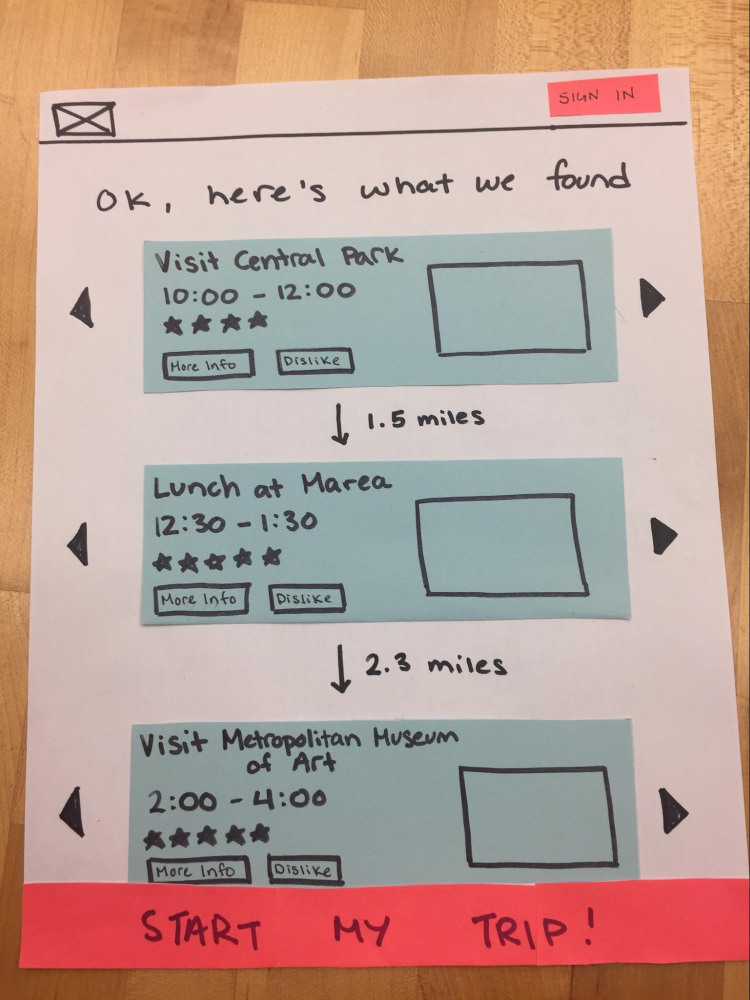
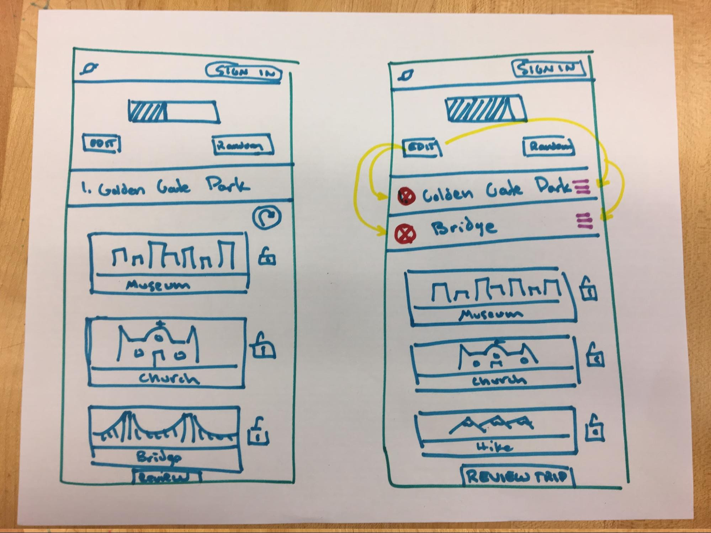
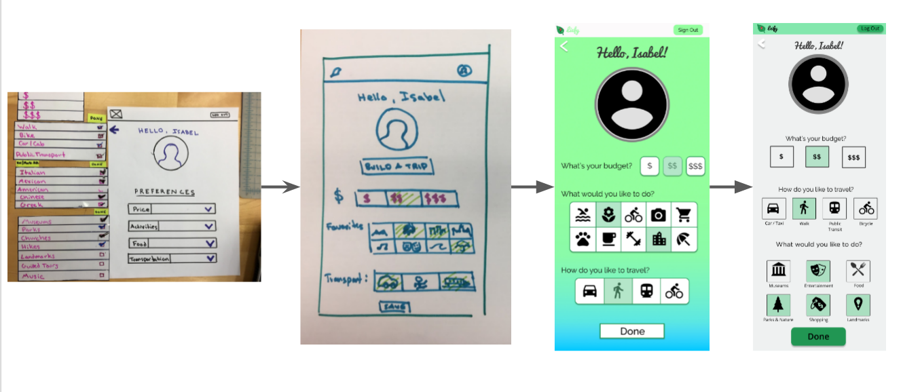
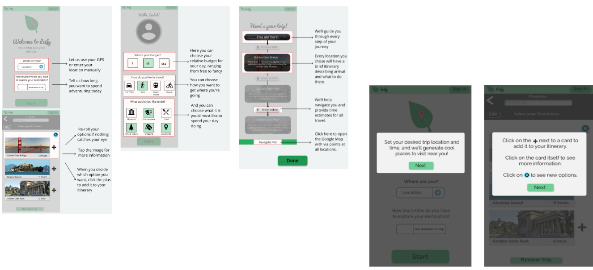

Leify is an application that helps a user build an itinerary given a location and the duration of their day trip. Our targeted user base would be those visiting a foreign city for the first time who would like to “just go” on a spontaneous trip without having to do much planning or searching online first. We take a combined “automatic trip generation” and “itinerary planning assistant” approach to our app, where we generating multiple suggestions for each segment of the trip. The user then selects the specific locales from our suggestions to build an itinerary for their day. At the end, we offer them the option to export their planned trip to Google Maps as a series of waypoints between destinations. We hope this app allows users to simplify their trip building experience, spending less time on planning and more time on exploring!
We were inspired to build this app after being frustrated by clickbait sites that offer 'The 25 best things to do in San Francisco' that make the user do the hard work of building their trip. Other apps that incorporate similar aspects to ours, like TripAdvisor and Kayak, are more comprehensive, including options for hotels, car rentals, flights, and more. We wanted to simplify the whole process to focus just on day trips. We believe this is a niche that many users would benefit from, including people simply travelling through new cities to those on business that have an extended layover and want to explore.
During the ideations and iterations of Leify, our team made some crucial decisions for the design of the app. These decisions were informed by formal user studies, heuristics evaluations, and design refinement. By working on fixing the flaws shown by these methods, we improved the synchronicity, flow, and ease of use of our app. Each successive test with users provided evidence for or against our change, and enabled us to determine if the change was overall beneficial.
Initially, we planned our app as a completely automated itinerary generator service, where we would handle creating an itinerary based a user’s location and available time for the trip. We would generate multiple itineraries, and the user would be able to select the one that they prefer the most. As part of this, we didn’t communicate how the server-side processes created the itineraries, or how we decided that a user may want to visit a certain location. We received feedback that this approach created some unease, given the opaque nature of the completely autonomous trip generation. Users wanted to be part of the process somehow, and wanted greater weight the process of creating their itinerary.
The first iteration of user inclusion looked like this:
We would generate multiple choices for each time slot, and the user would scroll left/right to select what they would like to actually do. This approach had problems, because it complicated optimizing an itinerary to minimize travel times from place to place. However, we liked the combination of providing locations and having the user do the final decision.
Our improvement to this was allowing the user to decide locations one by one, thus solving problems with travel time optimization because we could then create suggestions for the next location slot informed by the previous location.
Feedback was positive for this approach. Based on some final suggestions for iconography and text, this was also the final design we used for the trip building part of Leify.
One of the most complex pages to design was the preferences screen, which underwent many changes through the process of this project. Originally, the preferences screen was mainly dropdown checklists that let the users choose the options that they wanted. After our first rounds of usability studies the feedback was strongly against the unusual dropdown checklists. People wanted to be able to see their options at all times and were in general confused by the layout of the drop-down checklists. We then changed the preferences options to be tile buttons, each with an icon the represented the option the user was selecting by clicking it. After another round of testing, we reduced the number of options, as the feedback we got was mainly concerned with the overwhelming number of options on the screen. We then consolidated some of the options and reduced the number of buttons, clearing up the screen and making it easier to digest.
At one point in the project, we were stuck between two versions of a tutorial for our app. The first was a long tutorial designed to cover all the confusing and notable parts of the app at the beginning. In other words, a user would click on the site and be immediately presented with everything they would need to know about our app and how to use it. The other possible tutorial came in the form of a series of overlays that would pop up on the pages they were relevant to and explain what was important about that page. We ended up doing A-B testing on those two tutorials, and through overwhelming positive feedback, decided on the overlay tutorial. The long tutorial was effective, but users generally skimmed it and would forget important points as they progressed through the app. The overlay tutorial popped up as soon as the user would need that information and was easy to dismiss, allowing the user to quickly understand and navigate the relevant page.
If we were able to make the app easily navigable without needing a tutorial, the app would be much more impressive. As it stands, the tutorials serve as a quick fix to keep the app usable, but it is by no means a final/ultimate solution. Making app usage intuitive enough that minimal help text is sufficient for a quality user experience is definitely something our app is lacking and something it would substantially benefit from.
No Randomize: We wanted to have the option for the user to randomize their trip locations if they didn’t have a strong preference and just wanted to go do things. The reason we don’t have that feature mostly rests in Invision not being easy to work with. If we wanted to adequately demonstrate the randomize feature, we would have to generate a number of example randomizations, which is a rather large time commitment for a not so important feature. We decided to leave it out instead.
Invision limitations: Invision allows the easy creation and navigation of basic prototypes that look really nice, but it requires that each page be made exactly as it will display. This means there is no easy way to show small permutations on a page. For instance, on the location/time page, we have the location default to San Francisco, even though intended functionality would allow the user to enter in their own location or have it automatically detect where they are. As well, the time selection button defaults to 5 hours because we don’t want to have to make unique pages for every possible number of hours. We would also have to design the rest of the app pages around that number of hours, which would be a huge undertaking.
No “Don’t show me again” explanation: For the possibility that a user didn’t like a location or had already been there, we included a “do not show again” button on the trip selection screens. This button caused confusion with users because they didn’t know what was being referred to or what the difference between “do not show” and “not this time” were, and were looking for the latter. If it was better explained, it would have been a useful feature.
Travel Time Not Accounted for in Total Time: We should have had travel time included in the total trip time. Instead, we divided time up to only include time spent at the locations, leaving out the time it takes to get there. This confused users and ultimately detracted from user experience, because they know they wouldn’t want to use a itinerary that ignored travel time.
Earlier in the project, we discussed options around adding a game feature to Leify. In this mode, the itinerary is replaced by steps in a scavenger hunt. Each step is hidden until the previous location is reached. This adds value to our app by providing users with large surpluses of times the ability to explore the city more freely with only a small set of clues as to the final location in front of them. This mode could also take users down less traveled streets to provide a better “immersion factor” which certain users would desire. It provides a sense of accomplishment as well, as the user is in charge of finding the location hinted at. Features around this would help steer the user in the right direction and prevent endless wandering.
Another possible feature discussed was a automatic route optimizer for the final itinerary. This optimizer would analyze the destinations selected to visit and see if a quicker order for the itinerary existed. If one did, it would then ask the user if they would prefer the optimized route over the order the user manually added the places in. This feature would add some computational overhead to the app as it takes time to find the fastest route over several transportation methods. Users who are more limited on their available time would greatly benefit from this feature as it could expedite their total trip time, making them more comfortable in using the app overall.